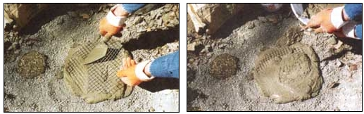
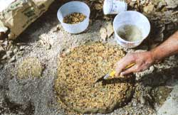

Down the garden path in style.
Back in the 1800s when America was expanding west, no sooner did the railroad come to a rowdy frontier settlement or scruffy trading post than the town elders got the urge to citify. One of their first civic improvements was to built boardwalks to protect ladies' skirts and gents' shined boots from the mud roads. Then they took the twists and turns out of the coach road and named it Main Street. Next they paved the road and replaced the old boardwalk with a poured-concrete sidewalkall evenly graded and arrow-straight.
But, have you ever noticed that there are no even grades or straight lines in nature?
To me, sidewalks-straight, flat, rigid, and purposeful-symbolize citymen's relentless urge to civilize: to impose order and efficiency on the lovely curves and chaos of nature.
In contrast, the deer trails and the faint hillside rut that's all that remains of the old Indian path running through my woods keep their curves and seem to meander. But they are as purposeful and efficient as any city sidewalk if you can accept a preindustrial concept of efficiency. They don't impose straight lines and artificial order but take their own "path of least resistance." That path may be longer as it winds along ridges rather than up hills and down gulches, but it guides you gently to travel at a deliberate pace using minimal energy and no technology beyond a soft grass cushion inside a well-stitched moccasin.
Illustrations: Kenneth Lin
A city sidewalk issues orders-telling you where to go and how to get there-and it goads you with its endless straight-out agenda to get there as quick as possible. Hurry, hurry. Where's a cab anyway?
A country path gently lures, beckons, entices, invites you on a leisurely journey where the trip may be more important than the destination. It takes you around big trees and rock outcroppings rather than over or through them. On a country path you almost have to (what's that city-stress-reduction admonition we hear so often)..."Take time to smell the daisies."
Why Paths?
Every country place needs paths to order activity-from road to house, house to garden, garden to barn. A new house will need a whole new network of walkways, and every new family moving into an established dwelling will have its own foottraffic requirements.
But if, like so many of MOTHER'S readers, you've come to the country to escape the sidewalks and find time to smell those daisies, please leave the hard-surface, straight-line city concept of what a path ought to be back in the smog where it belongs.
You'd be surprised at how many new arrivals in our little New England town spend their first weekends of country life reordering their front walks. There's something symbolic about rebuilding that connector between home and road, but I haven't figured out just what it means. These folks try laying concrete or maybe buy a cube of bricks or pavers and a pile of river sand and slap them down right on top of the soil. Or worse, they let themselves be conned by one of the gypsy hottop peddlers that spray out a bubbling mix of used auto oil and tar patch, collect their money, and disappear.
A MEMORABLE PATH
A path ought to be more than a footway from here to yonder.
It should beckon ...like the path to the spring house at my family's old home place where we'd all gather for July Fourth picnics when I was young. There was a mysterious, dark opening in the wall of black oaks off toward the river, and the cousins and I couldn't help but enter ...and then had to discover what lay beyond the first turn, then the next and the next as dry grass underfoot turned to spongy forest loam, then to mossy cobbles as the path wound down to the low shed over a flowing spring that chilled buttermilk, fresh eggs-and watermelon. The mosquitoes were thick and Great-Uncle Will insisted that a troll lived in the spring, so we never stayed long. But to me a forest path will always promise mystery and cold watermelon on a hot summer day.
Build some mystery and memories into your own path. Give it at least one turn-and two or three are better-so that you can get a little lost, and for a bit can't see where you came from or where you're going.
Build in a few surprises, too-such as a shady alcove that offers a flat rock or a garden bench to sit on and a tree to sit under.
Or put a bower over the path-an arch-topped, open-work arbor made of saplings or thin wood. Mail-order gardensupply catalogs sell arbors ready-made from wicker or-ech-plastic. Rambling roses or grapes can be planted to grow up and over the top. Romantic poets write of the marvelous things that can happen in bowers.
Or, make a grotto. Just the word grotto conjures up visions of a deep nook with spring water dripping down mossy rocks nestled in ferns. Lacking a spring, install a little pool with an electric watercirculating pump (also from the catalogs).
I'm told that the best grottos host elves-if you believe in that sort of thing. After a hard workday, a stroll along a proper garden or woodland path should lighten you up enough to believe for a while-or want to.
Then, without a solid base, frost-heaved soil moves under the new path and the concrete cracks or the brick or pavers slough crooked the first winter. Without proper bed compaction and edging, spring rains will wash loose earth out from under the tar before it, too, cracks and then turns to goo on the first hot summer day.
The paths I've built have been to serve a practical purpose. The grocery-hauling path from drive or garage to the kitchen door is heavily traveled and well kept while the formal walk to the front door is used only by traveling salesmen and the preacher, so it's more for show than use and often sorely neglected.
Most of all-on my place, at least-paths are to defeat mud.. .without having to resort to the cityman's solution of paving everything over. We have two "mud seasons" here. In spring, there can be as much as six weeks between thaw and the time that the soil dries out and grass begins to grow, firming up the sod. Between times, any sod or open soil turns to gumbo if subjected to repeated traffic from people, pets, or livestock In the fall, if there's much time between the end of growing season and a hard freeze, the mud can be just as evil. It sticks to everybody's shoes, cakes the kids' bicycle tires, and swallows any tool or set of keys that gets dropped into it.
A Roll-up Boardwalk
I don't know how many country places I've seen in the spring with an assortment of wobbly old wood planks laid over mud holes on the track between house and drive, or all the way down to the road so the kids don't get mired down on the way to the school bus stop. I've also used planks to plant the early garden and to get maple sap to and from the evaporating pan at the backyard fireplace. But planks don't last long and it's a waste of good wood better used to make shelves or a playhouse.
A temporary path of sand or organic mulch will keep a mud path passable, and can be tilled into the garden or forgotten when no longer needed. . .but it needs continual replenishment.
The best temporary path I've found is a flexible "boardwalk" of rot-resistant wood slats spaced with beads or plastic washers and strung moderately loose on rot-proof nylon cord. Being flexible, the path can be rolled up to be carried to a different location or into storage. Length of each section is up to you, but I find that five-inch lengths are easiest to manage
You can purchase this walkway ready-made in six- or eight-foot lengths, straight or curved, for $8 or $9 a running foot. But the commercial variety is made for looks and is as broad as a sidewalk-half again as wide as you really need. Plus, it's sawn from "PT"-pressure-treated wood that's been infused with CCA, a heavymetal brew of chromium, copper, and arsenic. If it's toxic enough to keep woodhungry termites and dry-rot fungi at bay for up to a half century, it sure can't be good for other living things, including you and me, the kids, and pets.
Besides, it's cheaper to make your own roll-path from naturally rot-resistant wood, nylon cord, and plastic-pipe spacers. Cost is a dollar or two a foot using one of the naturally rot-resistant south ern yellow pines and maybe twice that using northern white cedar or western red cedar from the lumberyard, or a good-keeping native wood such as sassafras, red mulberry, or mesquite from a local sawmill.
As the photos show, I made my newest roll-path from 1 3/4"-thick, 10"-wide California redwood, which is normally too rare and expensive an option, but I managed to salvage it free from a suburban deck-building site (the boards had too much yellow in them to satisfy the client, I was told). Here are the steps.
1. Cut Board to Step-Width
I divided the boards into step-width sections that would offer just enough sidetoside distance to kneel comfortably and to walk without having to squeeze my ankles together. For my big feet, that's 16 inches. I then ripped the 10" x 16" board into 16"long strips.
In past roll-paths, I'd cut each strip to be taller than it was wide, which caused the narrow-footed strips to flop and wobble as I walked on them.
My 10"-wide boards divided neatly into five sticks, each one a saw cut short of 2" (1 15/16") wide-just enough broader than they are high (1 3/4", or 1 12/16"), so they are stable on the ground.
2. Drill Holes for Stringing Cords
You need to drill holes in each end of the sticks to string the cords through. To avoid splits, locate holes two inches from the ends. Use a drill bit just a tad larger than the cord you select. I used 3/8" nylon sash cord that is found in every hardware store. It is plenty strong and inexpensive.
I drilled holes using a drill press with a simple homemade jig clamped to the drill table that automatically placed the center of either end of the strips under a wood bit.
A hand-held electric drill would do as well so long as you locate holes precisely on the strips, punch a starting hole for each, and use a brad-tipped bit that won't slip on the work. With a drill such as my little 7.5-amp cordless, that has a simple spirit level built in, you can sink perfectly plumb holes by eyeball.
3. Cut Spacers
To conserve wood and increase flexibility, you need to locate spacers on the stringing cords between each wood strip. You can buy preformed 1/2" PVC plumbing-pipe connectors at about 15 cents apiece. It's a lot cheaper to cut 1/2" white or black plastic water supply pipe into inch-or-so sections. You can cut them with a hacksaw or do it quicker with a $15 PVC shear. Again, I made a simple jig to slip the tubing into to measure length automatically so I could snip them out quickly with the shear.
4. String on Cord
Finally, string wood strips, separated by spacers, onto the cord. Use a live flame to seal ends of cut cord or it will unravel. Watch the melting plastic; it can drop in a sputtering blob that can stick to skin and give you a nasty burn.
When cord ends are cool, string altera nating sticks and spacers on parallel cords till you have 5' to 10' or whatever length you prefer. Make a small loop in one end of each cord. Snug strips and spacers against the loop tight enough that they will roll out into a firm path, but loose enough to roll back up tight. Make a tight knot at the far end to keep the path together, leaving a good yard-long tail to tie around the rolled path and to pass through the loop of adjoining sections to make a contiguous pathway. Flame-seal the long tail ends of your cords. Then-very carefully-play flame around the knots at both ends of both cords just enough to seal the knot tight to the cord, but not so hot the plastic melts and the cord parts.
You can make curving sections of roll-path by leaving out all spacers, every other spacer, or every third spacer on one side. Don't cinch the end knot down tight on the spacerless inside of a curving length of path. Leave the cord the same length as its mate. Then you can use the length for curves, or space strips out even by hand and use the section straight. These loose path sections will roll up into an even cylinder. If tied down into a permanent curve, the rolled section will roll up like a giant wooden rose blossom, and it won't stack.
Trails from the Wood Pile
Like me every spring, I bet you have a heap of splinters, chips, knots, and bark on the woodshed floor. This scrap doesn't burn well in the wood stove, or under the maple-syrup pan, but it will dry to tinder over a hot summer and pose a fire hazard. I clean it up to the last crumb, shovel it into a big garden cart, and haul it to where a long-lived mulch or pathway is needed most. It makes a fine people-path on flat land-but fits better back on bridle trails in the woods.
A decade ago when my daughter Martha was a preteen, she had a blue-eyed strawberry roan named Doc. I had great fun cutting them a network of riding paths through the pines.
Pine needles make a great bridle path on level ground in the deep woods. But for an all-weather path over wet meadow, bark is better. The large and lumpy chunks float, dry easily, and help keep wet mud from packing up into horse hooves and from splattering up on the horse's belly, the rider's jeans and boots, and into the rigging.
Needles are slippery when dry, so I used cordwood to fashion people-stairs to give purchase up short hills or horse-stairs up gentle rises in the woods. I hauled in quarter splits of pine (that lasts longer than hardwood-and is lighter in weight to boot), sunk at a slight back-slanting angle into the forest loam.. . one flat side facing up and the other facing forward and held in place with vertical pine stakes sunk at each side of the front face. Wood splits make good stair treads that will last three to five years and then sweetly molder away into the soil.
I distrust marshy spots as well as slow streams with bottoms covered with leaves. Sharp rocks can be freeze-lifted out of the soil to project up unseen beneath the mud, and they can cut a horse's hoof pad or pierce any footware but a steel-shank logger's boot.
I set scrap lengths of PT lumber lengthwise in the stream bed-a few inches apart over a 4-foot-wide crossing to permit water flow-through. Over them I laid willow or young maple saplings placed crosswise, in the along-trail direction, weaving limbs into a snarl. On top went larger trees cut to 4' lengths on the spot. I removed all limbs but those on the best-limbed side Those limbs were trimmed to a foot in length and pushed down through the willow bed and into the muck as I set in the logs cross-pathwise. If there was a perceptible flow to the waterway, I placed the top course of logs so the crotch of the limbs angled upstream and the limbs anchored the logs against the flow. This is a miniature corduroy road-the traditional way pioneers build roads across swamps and marshes.
Hard-Surfaced Pathways
If your house design, neighborhood, or simple preference requires paths topped with a hard surface, you'll find plenty of books and videos purporting to show how to use a garden hose to describe fair curves, warning you to avoid tree roots and buried utility lines and all, and how to lay flat rock, slates, flagstone, concrete, brick, or preformed concrete pavers. Just don't rely completely on anything published much before 1990. For proof if you need it, look at the drives and walks of homes around you. The best looking are nothing but compacted soil, perhaps with a crushed rock surface. Unless it dates back to the early 40s or later, most any hard-surfaced path or drive much over a decade old has been replaced or is falling apart.
In the old days, they knew that the secret of a really permanent walkway is a solidly compacted base that extends below frost. My mother's house was built in 1921 and has a loose-brick sidewalk and gravel-on-packed-clay driveway leading back to the old Model A-sized garage. Both are as solid as if they were granite ledge. I was visiting the grandparents one time back in the 50s when the water company dug through the yard to install a new supply line. Beneath both walk and driveway, a core of nearly rock-hard base went down deeper than they laid the water line-and the guys were standing waist-deep in the trench. And, that's nothing compared to Roman chariot ways-built where frost never happens but that have compacted rubble bases ten feet deep. The Roman roads are still in use today.
But during the housing boom that followed World War II, contractors' standards declined to the point that roads, paths, and drives were laid right on top of fill-soil that had been dug out for foundations or artery roads, then bulldozed back and maybe rolled once or twice.
The problem is, once disturbed, soil that's been settling for 10,000 years gains a good 1/3 or more in volume-all of it air. Unless properly recompacted, it will settle slowly for the next 10,000 years, and won't support a rigid surface in the interim.
So, when you dig down for your hardtopped path, practice "skimming." Remove sod and topsoil down at least six inches into subsoil, and eight or ten inches is better. When you get near your base depth, scrape shallow with a flat shovel or sharp hoe so's not to disturb soil that won't be removed. Make the bottom fiat and level. Cut sides of the trench sharp and square too, so you have undisturbed soil along the sides as well as at the bottom. This will help restrain sideways slippage of your surface materials.
Use a level to even off the bottom of the trench at a uniform depth. Then, add a bedding of road fill-not gravel or sharp sand or crushed rock as recommended till fairly recently. Road fill is a mix of fine- to medium-grade crushed local rock variously termed "Class 2" or "3/4-inch" or "21A" It's the stuff that goes under new first-class highways. Calculate the cubic yards you'll need to fill the trench and order two-thirds as much more. It doesn't cost a lot but comes by the dumptruck load. If you are persuasive, the scaleman may let you pick it up in small lots at the crusher in your own vehicle. Keep it dry until it is covered by sand and pavers.
Add fill two inches at a time, tamping each layer with a rented gas-powered compacting sled, the head of a wood splitter maul or sledge, a length of wood beam, or a rented fiat-faced hand tamper. Pound till the fill smashes down to less than two-thirds of its loose height and till the sound it makes goes dead. If you want to get fancy, go to a paving contractor and get some geotextile fabric-black plastic sheeting that will improve the lateral stability of the bed so the soil under your pavers won't slump sideways. Put it over the bottom two inches of tamped bedding and up the sides. It will make a cleaner and more rigid job if you rim both sides of the walk with plastic edging at this point. You can get it where they sell the geotex.
Add bedding (tamped well) to groundlevel less one inch plus the maximum height of your pavers. Purchase bedding sand or "concrete sand" for the final layer to set the pavers in. This isn't mason's sand or sharp sand or sand from the pit down the road. It comes bagged. Spread and compact it till you have a solid 1" layer. Tamp it especially well against the flaps of geotex at the sides of the trench. Then lay in your pavers. This base will support any pavers that are even-thickness: thick slates, shale or other flat rock, cast-concrete pavers, or brick. Your supplier can show you the hundreds of patterns you can choose from and will supply half-bricks or a brick cutter for intricate interwoven patterns. Leave a quarter-inch between pavers-and to fill the space, brush and water in special joint sand (another bagged product you need to purchase). Keep brushing it on and watering it in for a week or two till the cracks all full.
I like bricks and some commercial pavers but prefer to collect my own flat rock from a quarry or river bed. In most locales, "found stone" comes in varied shapes and thicknesses and resists being set in any regular pattern or a flat, uniform height. Go ahead and dig the trench as above, and compact a firm base of road fill. But I'd forget the geotex and fancy sand. I set the rock, least-flat side down in a layer of common sand, and work the rocks around so they make the most level platform possible.
Then I fill around them with sand and water it in. Plan to top up the sand periodically, and don't discourage growth of low plants between the stones.
Indeed, I seed my paths with moss by collecting several clumps of low, tightgrowing moss clumps from an old log in the woods in the early spring. I rub greenery and the black root mass to shreds between my hands, mix it to a thin soup in watered-down buttermilk, sprinkle it on the path, and use the hose to spray the mix into the space-filling sand. Sometimes it takes. Sometimes it doesn't. But, a good moss chinking binds rocks or pavers in place for good.
Make Yer Own Pavers
If you lack local stone and don't want to buy pavers or rock from a nearby rock yard, you can make your own from concrete and custom-made plywood forms. (You can buy plastic paver-casting forms for about $35, but you are stuck with their choice of shapes.)
Look in the books and at local paths and decide what shape, color, and size rocks you want to walk over for the next few decades. You can make one-stone forms or multiple-rock forms.
I always make a scale mock-up of building projects. In designing things like paving stones I cut out various shapes from paper and try arranging them in a walkway. When I've chosen four or five shapes, I draw them full size on cardboard and transfer the pattern to a form.
You'll need a half-sheet (4'x4') of 1/2"-thick exterior-grade plywood to make the form. Tools include a circular saw to cut the square outer rim of the form, and a drill/driver and drill bit to make a hole to admit the (plywood-cutting) blade of a saber saw, which will cut out the rock shapes from inside the forms. A drum sander for the drill will help to sand the insides of the form smooth. Latex window caulking goes in the inside of the form to smooth it, and a good enamel paint over that to seal it. Also, get enough hardware cloth (wire that's woven loosely and soldered together) to make reinforcements the size of each rock you plan to make.
For each rock, trace the pattern on a square of plywood, and use the drill and saber saw to remove the paver-shaped center. Use the first form to trace the shape on three other squares of plywood. Stack all four forms, align holes in center, and fasten them together with wood screws.
With the drum sander, smooth inner rim-grinding it at a slight angle all around so the bottom is slightly larger than the top.
Press caulking into all the cracks inside the form and thumb smooth. Let dry and sand lightly by hand. Then, paint all surfaces with several coats of gloss enamel, sanding inner rim lightly between coats.
Casting Stone
To make pavers, establish a firm, level inch-deep bed of clean sand. Place forms on the sand, larger side down. Cut rounds of hardware cloth to fit inside each.
Get bags of concrete premix (contains rock) or sand-mortar mix (add up to half the dry volume of your own rock). Mix with water precisely according to directions on the bag, stirring with a hoe on a plywood sheet or using a rented mixer. Fill each form half full, press in hardware cloth reinforcement, and top up with concrete. If you like, press colored rock, wood chips, or another texture into the top. You'll find small lots of colored gravel in many earth colors in the fish section of most pet stores.
Let set for 15 minutes or till firm. Tap the edges of the forms sharply and pull off the mold. Smooth the upper edges only to a stone-like curve. Then, use a paintbrush and some water to wash off enough mortar to reveal any rock texture.
Let your work cure overnight (covering it with a sheet of plastic to protect against rain).
The next day, slide pavers off the sand, supporting them well underneath so they don't break, and start building your allhandmade walkway.
Premium Walkway Pavers
"Interlocking concrete pavers" in all sorts of earth colors and designer shapes are increasingly popular for fancy suburban walks, drives, and patios. At a cost per square foot approaching the cost of a new home, they are gorgeous and can be laid (in an exaggerated version of the system described above) to be solid as a Roman road. But they look awful if the perfection of the design is ruined by inept installation, heaving, or slippage. It is really a job for experienced pros. For information on the lat est system of paver installation, contact the Concrete Paver Institute, 1323 Sheperd Dr., Sterling, VA 20164. Tel: 800-241-3652.
|
Cutting slats with a circular saw |
Cutting spacers (Note: Blade guard on saw removed for photo clarity only. Always use safety devices in normal operation.) |
Left: Flame-sealin end of nylone rope. Right: Stringing slats and spacers on rope. |
|
The paths are ideal for planting in early or late season. You can drop the seeds right in the mud and cover them with a bit of potting soil/dry out. |
 Making paver: Laying bottom layer and wire reinforcement (left) and then top layer of concrete (right). |
Left and Right: Adding texture stones. |
|
 Washing the surface |
|
|